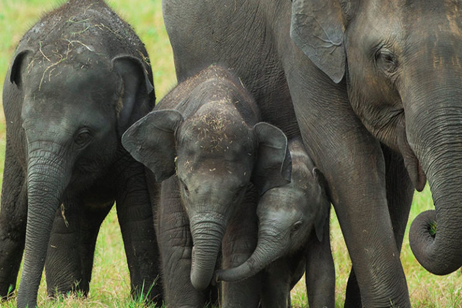
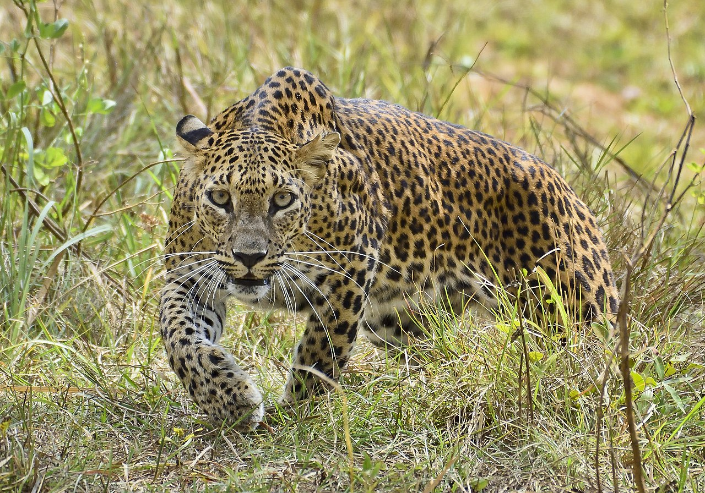
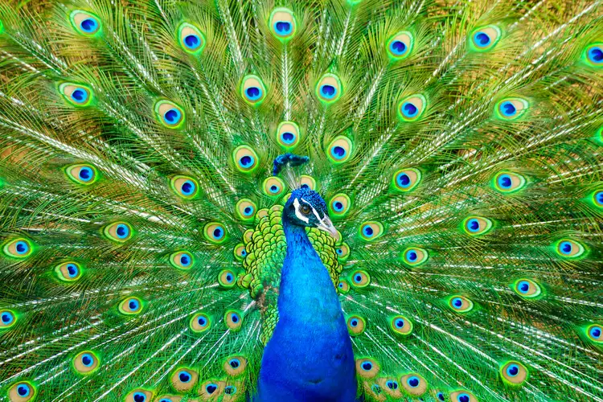
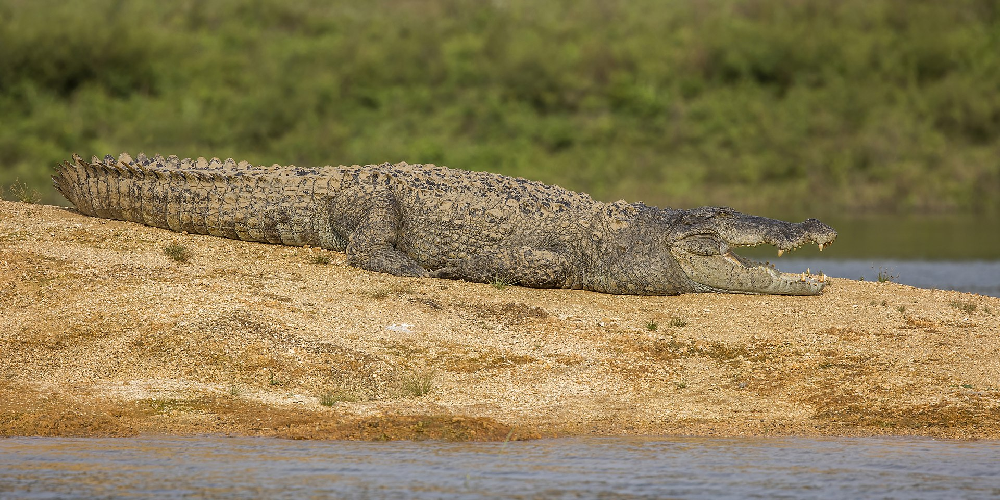
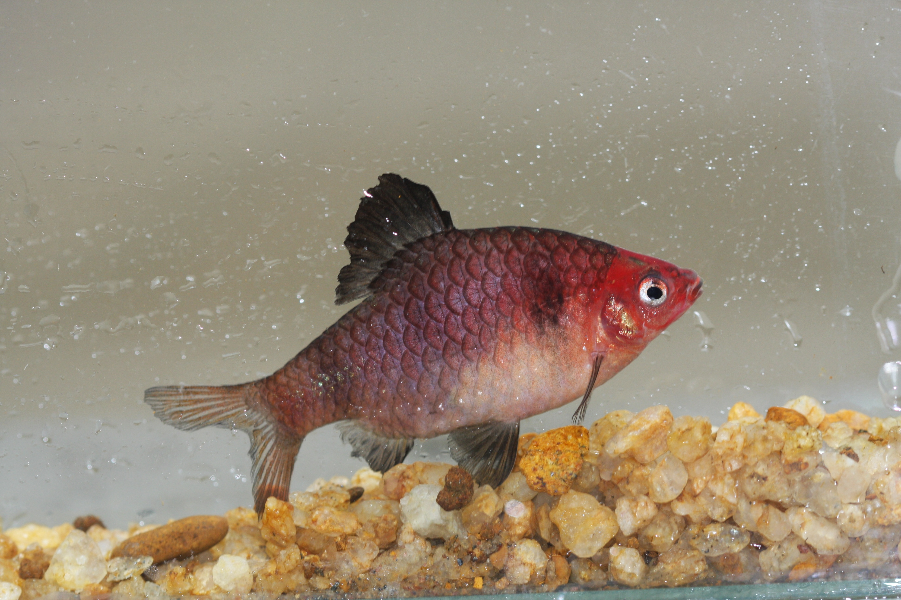
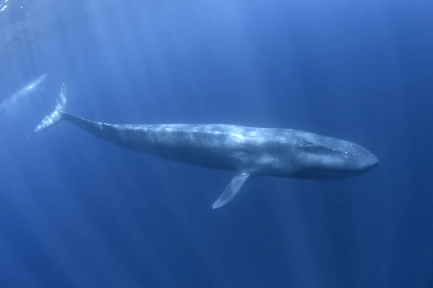
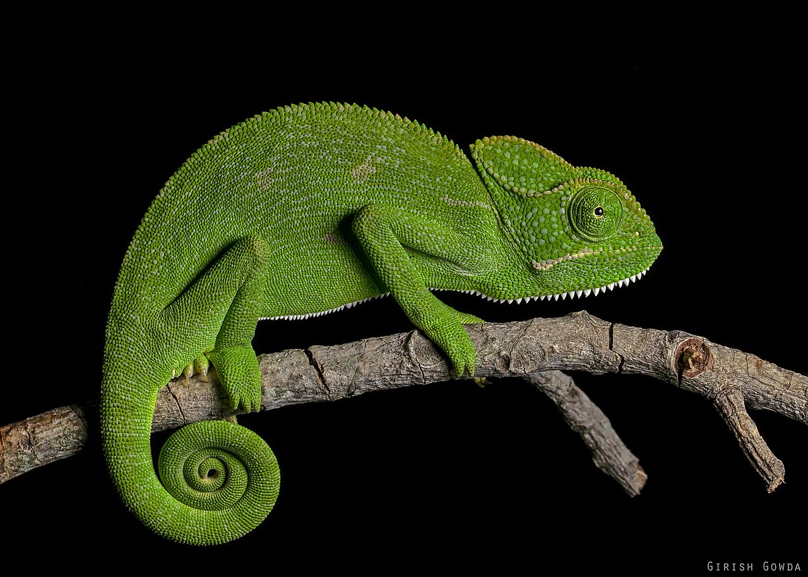
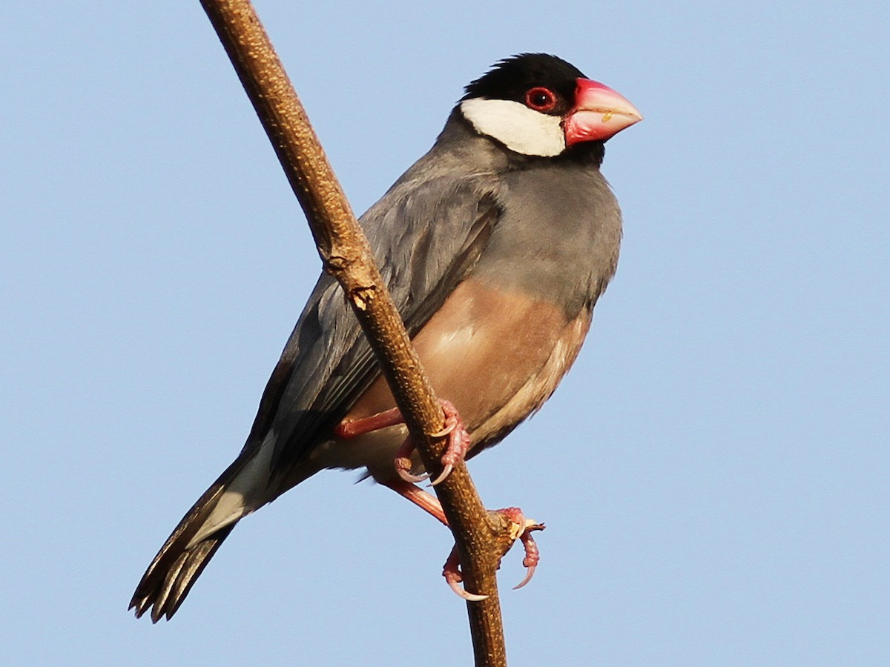

Udawalawe National Park
Udawalawe National Park, situated in the southern part of Sri Lanka, is renowned for its rich biodiversity and stunning landscapes. Established in 1972 as a sanctuary for displaced wildlife due to the construction of the Udawalawe Reservoir, the park covers an expansive area of 30,821 hectares. The reservoir not only serves as a vital water source but also creates a unique habitat for various species. Udawalawe is particularly famous for its large population of Asian elephants, making it one of the best places in the world to observe these majestic creatures in their natural environment. The park is also home to an array of wildlife, including buffalo, deer, crocodiles, and numerous species of birds. Its diverse ecosystems, ranging from grasslands to wetlands, provide a haven for flora and fauna alike. Visitors can explore the park through safari tours, enjoying the opportunity to witness the incredible wildlife and appreciate the conservation efforts that have allowed Udawalawe to thrive as a sanctuary for Sri Lanka's precious biodiversity.
More about Udawalawe Book safariSinharaja Forest Reserve

Sinharaja Forest Reserve, located in the southwest corner of Sri Lanka, is a UNESCO World Heritage Site and one of the island nation's last remaining rainforests. The history of Sinharaja dates back centuries, as it has been untouched by human habitation due to its rugged terrain and isolation. This pristine tropical rainforest spans an area of approximately 8,864 hectares and is a biodiversity hotspot, home to a remarkable array of flora and fauna, many of which are endemic to the region. The reserve serves as a living laboratory for scientists and researchers, offering invaluable insights into the complexities of tropical ecosystems. Sinharaja is famed for its rich biodiversity, including over 60% of Sri Lanka's endemic species of mammals and butterflies. With towering trees, vibrant birdlife, and diverse plant species, Sinharaja stands as a testament to the importance of preserving these critical ecosystems for the benefit of both current and future generations.
Wasgamuwa National Park
Wasgamuwa National Park, nestled in the central and eastern provinces of Sri Lanka, stands as a testament to the nation's commitment to wildlife conservation. Established in 1984, the park was designated to protect and preserve the diverse flora and fauna inhabiting its 36,900 hectares. Historically, the region served as a royal hunting ground during the times of ancient kings, showcasing the longstanding importance of its biodiversity. Wasgamuwa is renowned for its thriving populations of Sri Lankan elephants, making it a prime location for elephant enthusiasts and wildlife photographers. The park's diverse ecosystems include grasslands, riverine forests, and wetlands, providing a habitat for a variety of species such as sambar deer, water buffalo, and the elusive Sri Lankan leopard. The park is also a haven for birdwatchers, with over 140 bird species recorded, including the endemic red-faced malkoha. Wasgamuwa National Park stands as a crucial stronghold in Sri Lanka's efforts to safeguard its natural heritage and offers visitors a unique opportunity to witness the beauty of its untamed wilderness.
| Animal Name | About | can be found | conservation status | Image |
|---|---|---|---|---|
| Elephant | Sri Lankan elephants, Elephas maximus maximus, are the largest subspecies of Asian elephants and are revered cultural symbols in Sri Lanka. |
|
endangered |  |
| Leopard | The Sri Lankan leopard (Panthera pardus kotiya) is a critically endangered subspecies known for its elusive nature and inhabits various national parks across the island. |
|
endangered |  |
| Peacock | Sri Lanka is home to the vibrant and iconic Indian Peafowl, or peacock (Pavo cristatus), with its resplendent plumage, commonly found in diverse habitats across the island, adding a touch of elegance to the natural landscape. |
|
endangered |  |
| Mugger crocodile | The Mugger crocodile (Crocodylus palustris) in Sri Lanka, commonly found in habitats like Yala and Wilpattu National Parks, is a formidable reptile essential to the island's aquatic ecosystems. |
|
endangered |  |
| Grizzled giant squirrel | The Grizzled Giant Squirrel (Ratufa macroura) can be found in the central and hill country regions of Sri Lanka, particularly in the montane forests of places like Horton Plains National Park and Knuckles Conservation Forest, where it thrives in the canopy of tall trees. |
|
Near threatened |  |
| Bandula barb | Bandula Barb (Barbodes bandula) is a captivating freshwater fish indigenous to Sri Lanka, distinguished by its vibrant coloration and typically inhabiting clear, flowing streams and rivers. | freshwater habitats across Sri Lanka, particularly in clear, fast-flowing streams and rivers | Critically endangered |  |
| Pygmy blue whale | Pygmy blue whales in Sri Lanka, a smaller subspecies of the magnificent blue whale, grace the Indian Ocean waters off the island, attracting awe with their distinctive size and migratory patterns. | can be found in the waters around Sri Lanka, especially in the Indian Ocean. Marine regions such as the southern coast of Sri Lanka, including areas near Mirissa | Endangered |  |
| Indian pangolin | National bird of Sri Lanka with vibrant plumage. |
|
Endangered |  |
| Indian chameleon | The Indian Chameleon (Chamaeleo zeylanicus) in Sri Lanka showcases its remarkable color-changing abilities in diverse habitats, from lush forests to urban gardens. |
|
Least concern |  |
| Java sparrow | The Java Sparrow (Lonchura oryzivora), introduced to Sri Lanka, is a charming bird often found in urban and suburban areas, adorned with distinctive black, white, and chestnut plumage. | You may find Java Sparrows in urban and suburban areas, particularly around human habitation, gardens, and areas with grain crops | Endangered |  |
| Endangerder Animals of Srilanka | ||||